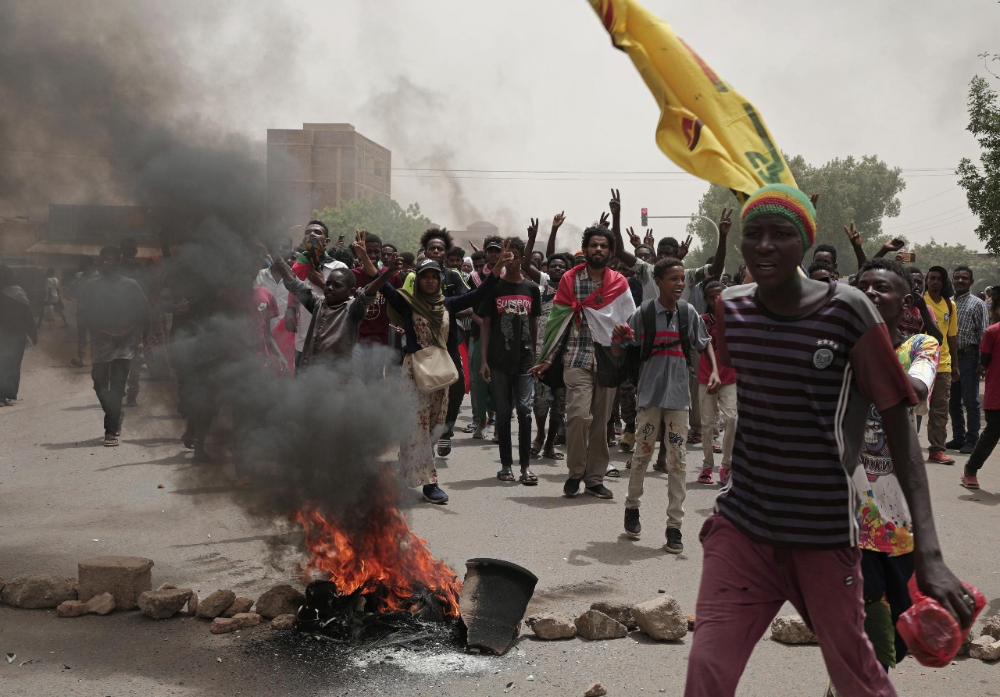
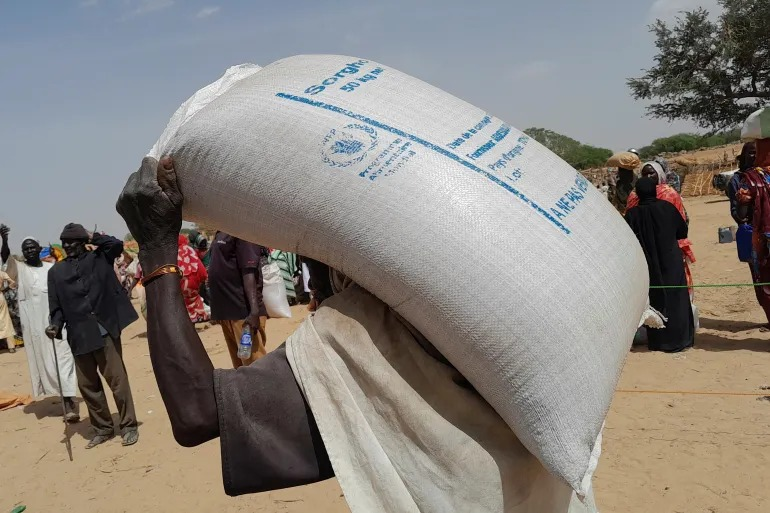

Causes of Hunger in Sudan

Ongoing Conflict
War between the SAF and RSF since 2023 has displaced millions, destroyed farmland, and blocked aid access.

Climate Change
Recurring droughts, floods, and erratic weather patterns have damaged crops and reduced harvests.

Economic Collapse
Inflation and poverty have made food unaffordable for millions, especially in rural areas.

Blocked Humanitarian Aid
Looting, attacks on aid workers, and roadblocks have slowed or stopped lifesaving food delivery.